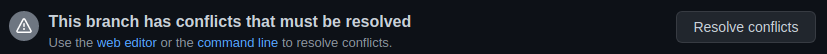
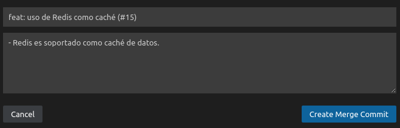
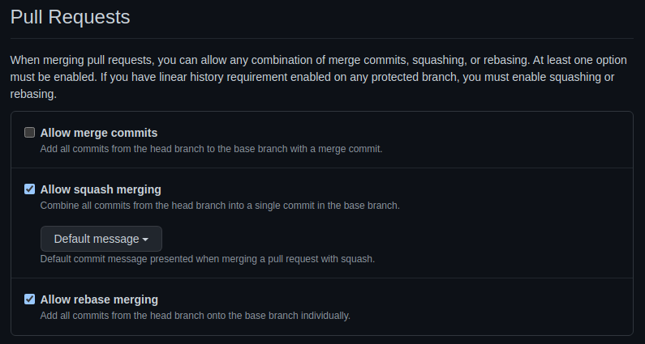

Confirmaciones y combinaciones de Git
Para trabajar bien con Git, conocer cómo funcionan las confirmaciones y las combinaciones es clave. Casi todas las estrategias de ramificación requieren un conocimiento muy bueno de las combinaciones. Por esta razón, vamos a dedicar esta lección a ambas operaciones.
Al finalizar, sabrá:
-
Qué es y cómo realizar una confirmación (commit).
-
Qué es y cómo realizar las combinaciones de ramas (merge).
-
Qué es un conflicto y cómo resolverlos.
-
Para qué sirve el squashing.
-
Qué es y cómo realizar el cherry-picking.
Introducción
Git es el sistema de control de versiones más utilizado hoy en día. Debido a que las estrategias de ramificación son muy importantes y, a su vez, fijan las reglas del juego que debemos seguir a la hora de trabajar con los cambios, es de vital importancia conocer bien las confirmaciones de cambios y las combinaciones de ramas. Groso modo, una confirmación (commit) registra un cambio en una rama, mientras que una combinación de ramas (merge) consiste en aplicar todas las confirmaciones de una rama en otra. El cherry picking es una operación que permite aplicar una determinada confirmación de una rama en otra, imprescindible cuando trabajamos con una rama de hotfix y la estrategia de desarrollo troncal.
Confirmaciones de cambios
Cada vez que realizamos un cambio, debemos realizar una confirmación (commit), o sea, una operación mediante la cual registramos estos cambios en su rama correspondiente. Representa una unidad de cambio durante el desarrollo de nuestro trabajo o tarea. Registrará en el repositorio de Git el cambio y quién lo ha hecho, lo que a su vez permite saber qué cambios ha hecho cada miembro del equipo y cuándo.
Estas confirmaciones tienen un identificador único que usaremos para referirnos a ellas. Concretamente, es la huella (hash) de los cambios realizados como, por ejemplo:
d5e1edace785f6a287464db7c9f223ced95c129d
¿Cómo se trabaja entonces? Recordemos que existe un repositorio distribuido con copias locales, o sea, en los equipos de los distintos miembros del equipo, y remotas, en servidores como, por ejemplo, Azure Repos, GitHub o BitBucket. Cada vez que una persona quiere realizar unos cambios, debe trabajar localmente para, posteriormente, llevarlos a la copia remota. Para ello, crea una rama para realizar el trabajo encomendado, realiza tantas confirmaciones como necesite para ir registrando sus cambios hasta terminar. No hay que crear una única confirmación para toda la tarea, se recomienda hacer pequeños cambios e ir confirmándolos, en vez de hacer una gran confirmación para todos los cambios de la tarea.
Las estrategias de ramificación actuales recomiendan que al finalizar el día todas las confirmaciones locales se publiquen en el repositorio remoto para que no se pierdan, aun si la tarea no ha finalizado.
Cada cambio tiene como objeto registrar unos cambios relacionados con algún aspecto concreto de la tarea, tienen un mensaje con el que describimos brevemente lo realizado. Recuerde, de las estrategias de ramificación, que estos mensajes de confirmación generalmente deben tener un formato estipulado por la organización como, por ejemplo, chore: uso de rutas relativas en la propiedad files del package.json.
Combinaciones de ramas
En Git, una combinación (merge) es una operación por la cual se integran o incorporan los cambios de una rama en otra. A la rama que recibe los cambios, se le conoce como rama destino (target branch, base branch o destination branch); mientras que la que contiene los cambios a integrar en la rama destino se conoce como rama origen (source branch o head branch). La idea es incorporar los cambios de una rama origen en una de destino.
Cuando utilicemos una estrategia troncal de ramificación, la rama destino será la rama troncal, generalmente, la nombrada como main o master. Mientras que las ramas orígenes serán las ramas de implementación, ya sean de función o de hotfix.
Hay que conocer varios conceptos: las solicitudes de integración (pull requests), las revisiones de código (code reviews) y la combinación (merge).
En primer lugar, para llevar a cabo cambios en el código, tendremos que tener una tarea bien definida que nos diga qué tenemos que hacer. Para llevarla a cabo, crearemos una rama de implementación y realizaremos en ella los cambios necesarios, los cuales iremos agrupando y registrando en pequeñas confirmaciones, cada una de las cuales hace una parte de la tarea que tenemos encomendada.
En caso de usar el desarrollo troncal (trunk-based development), lo que haremos es coger la rama troncal y crear una nueva rama de implementación, sea de funcionalidad o de corrección, para realizar en ella los cambios relacionados con nuestra tarea. No olvide que la nueva rama debe seguir el convenio de nombres marcado por la organización.
Si la tarea no la finalizamos en el mismo día, por buenas prácticas, algunas organizaciones solicitan a sus equipos que publiquen todas las confirmaciones que han hecho, aun si no han terminado la tarea. Esto ayuda a no perder el trabajo realizado si el ordenador falla o se pierde, además de tener registrado el trabajo del día.
Una vez terminada la tarea, lo siguiente es someter los cambios al escrutinio del equipo. La idea es que le echen un vistazo detenidamente para revisar y aprobar los cambios. Es posible que nos hayamos equivocado en algún sitio o hayamos malinterpretado alguna cosa que con la ayuda del equipo saldrá a la luz. Esto puede incluso generar comentarios que, en ocasiones, requieran que quien realizó el cambio tenga que explicar por qué lo hizo así. Incluso se pueden hacer recomendaciones de rendimiento que igual no pensamos o no caímos en ello, pero que pueden ser interesantes. Para ello, lo que hacemos es crear una solicitud de integración (pull request), la cual representa la petición de revisión y aprobación de los cambios realizados para integrarlos en una rama destino.
La idea de las solicitudes de integración es simple: validar que los cambios cumplen nuestras políticas. Para ello, a las solicitudes de cambio se les asigna revisores (reviewers), personas que deben estudiar el cambio con cuidado y aprobarlo. Estos revisores serán otros miembros del equipo. En algunas ocasiones, la combinación de una rama en otra puede conllevar que un determinado grupo de examinadores lleve a cabo el examen. En organizaciones más pequeñas, un revisor puede ser cualquier otra persona del equipo que no sea la que generó la solicitud.
Si los revisores consideran que el cambio es bueno, lo aprobarán y dejarán la solicitud lista para su combinación con la rama solicitada. Operación que, ojo, no tiene por qué ser realizada ni por el emisor de la petición ni por los revisores. Atendiendo a la rama a la que se desea combinar los cambios, la persona que realizará esa integración puede ser distinta e incluso una de un pequeño grupo de privilegiados.
Es muy importante que la solicitud de cambios (o sea, la pull request) describa claramente los cambios que se realizaron. Así, los revisores podrán tener una idea clara de qué se está resolviendo y les resultará más fácil hacer su revisión.
Los cambios deben cumplir unos requisitos de calidad que podemos garantizar con flujos de CI como, por ejemplo, que todas las pruebas de unidad pasen y que el código sigue cumpliendo los estándares de calidad.
Una vez aprobados los cambios, ya podemos hacer la integración de la rama de trabajo en la rama destino. Esto se realizará mediante una operación de combinación (merge). Esta operación tiene asociada inherentemente su propia confirmación porque va a hacer cambios en la rama destino. Esta confirmación requiere una descripción más detallada de los cambios como, por ejemplo, la que presentamos en la estrategia de ramificación:
tipoDeCambio(ámbitoSiNecesario): título descriptivo del cambio
Párrafos con una breve descripción del cambio.
Cada uno de ellos puede contener tantas frases como sea necesario,
la idea es ayudar a que cualquiera entienda, tiempo después, el cambio
sin necesidad de tener que analizar todos los cambios realizados en el código.
Conflictos
Es posible que en una combinación de ramas se produzcan conflictos. Es lo que menos deseamos, pero se pueden producir. Un conflicto (conflict) no hace más que reflejar una inconsistencia en la integración. Una situación anómala o desgraciada con la que Git nos indica que no puede hacer la combinación sin equivocarse. Cuando se dan, la operación de combinación se detiene y requiere que resolvamos el problema.
Por ejemplo, suponga que hemos comenzado una rama de función partiendo del punto P de la rama troncal. A continuación, llega alguien y comienza su nueva rama de función para atender su tarea. Para facilitar la explicación, consideraremos que parte del mismo punto P. Supongamos, ahora, que esa otra tarea conlleva crear un determinado archivo A con un determinado contenido C, por la razón que sea, ahora no intente buscar una razón por la que eso tendría que ser necesario. Hecho el cambio, abrirá una solicitud de integración, se aprobará e integrará el cambio en la troncal. En este momento, la rama troncal se encuentra en el punto Q, uno más que P. Nosotros terminamos nuestra tarea, con la casualidad de que hemos creado ese mismo archivo A, pero con un contenido D. Creamos la PR y solicitamos la aprobación de nuestro cambio. Nos lo revisan, lo aprueban y pasamos a realizar la combinación de ramas. La integración no la vamos a hacer con P, nuestro punto de partida, sino con Q, el punto actual de la rama troncal.
En este punto, observe que nuestra rama contiene un archivo A que no existía cuando comenzamos a trabajar, pero que alguien creó y confirmó en Q con un contenido distinto al que nosotros acabamos de crear. Aquí, se produce el conflicto y Git nos pide que lo resolvamos. El conflicto aparece porque Git no es capaz de fusionar los cambios de nuestra rama en la destino. Para hacerlo, tendría que sobrescribir el contenido C que se añadió tras P. Además, si tomase esa decisión, lo haría sin ser nosotros conscientes de ello. La cuestión es cuál de los dos hay que mantener o si debemos modificarlo a un contenido E.
En GitHub, las solicitudes de integración aprobadas que no pueden combinarse debido a conflictos, muestran un mensaje de error y un botón con el que pasar a resolverlos:

Y nosotros debemos indicar qué hacer:
-
No combinar (not to merge), es decir, cancelar la operación de combinación, haciendo clic en el botón Close pull request.
-
Resolver conflictos (resolve conflicts), o sea, indicar qué debe dejarse en el área conflictiva y realizar una confirmación de conflicto (conflict commit). Tenga en cuenta que cada conflicto resuelto debe dejar el archivo en estado consistente y no conflictivo y conllevará una confirmación con la que se registra ese nuevo cambio.
Cada conflicto aparece en un archivo concreto del repositorio y en unas líneas concretas de este archivo. Git lo que hace es indicar este archivo y las líneas de la rama origen que entran en conflicto con las líneas de la rama destino. Lo que indica el conflicto es lo que hay en el destino y lo que hay en el origen. Para ello, Git muestra el conflicto con un formato como el siguiente:
<<<<<<< nombre-de-la-rama-origen
contenido disponible en ese punto
en la rama origen
=======
contenido disponible en ese punto
en la rama destino
>>>>>>> nombre-de-la-rama-destino
La parte que va de <<<<<<< hasta ======= contiene texto que está disponible en la rama que deseamos combinar, o sea, en la rama origen de la combinación.
Se conoce formalmente como cambio actual (current change).
En cambio, la sección que va de ======= a >>>>>>> muestra el contenido que está disponible en la rama destino en la que deseamos escribir.
Se conoce como cambio entrante (incoming change).
Lo que hay que hacer es:
-
Aceptar el cambio actual (accept current change).
-
Aceptar el cambio entrante (accept incoming change).
-
Aceptar ambos cambios (accept both changes).
-
Realizar los cambios pertinentes para resolver el conflicto.
Métodos de combinación
Un método de combinación (merge method) indica una forma de realizar una combinación de ramas. Básicamente, las combinaciones de ramas podemos realizarlas como sigue:
-
Mediante confirmación de combinación (merge commit). Consiste en que cada confirmación de la rama origen se integrará como una confirmación independiente en la rama destino. Si la rama origen contiene, por ejemplo, cinco confirmaciones, la rama destino tendrá otras cinco confirmaciones. Esto tiene el inconveniente de que los historiales de cambios de las ramas son muy grandes y difíciles de seguir.
-
Mediante una combinación de confirmación y, a continuación, una combinación de ramas (squash and merge).
La combinación de confirmaciones (squashing) es una operación mediante la cual se unen varias confirmaciones en una única confirmación. Básicamente, genera una combinación que resume las combinaciones de la rama origen. La idea es que en vez de combinar varias confirmaciones de la rama origen en la destino, primero se resuman todas ellas en una única confirmación y, a continuación, se combine esa confirmación resumen en la rama destino. Es muy útil porque reduce el historial de cambios de la rama destino.
Después de esta combinación de confirmaciones se realizará la combinación de ramas, pero esta vez usando como origen la confirmación resumen.
Si estamos usando la extensión GitHub Pull Request and Issues de Visual Studio Code, puede hacer todo esto, en la solicitud de integración, seleccionando el método Squash and Merge de la combinación a realizar:
Una vez seleccionado el método, hay que hacer clic en Merge Pull Request, lo que nos pedirá el mensaje y la descripción de la confirmación relacionada con la combinación de ramas final:

-
Mediante rebase y combinación (rebase and merge).
En las opciones del repositorio, sección Pull Requests de Settings > General, puede indicar las posibles combinaciones que estarán disponibles:

Cherry picking
El cherry picking es una operación que coge los cambios de una confirmación registrados en una rama para aplicarlos a otra. Más concretamente, los extrae de una determinada rama y se los aplica a la actual. Se realiza mediante el comando git cherry-pick. Algunos usos son:
-
Aplicar una confirmación, registrada en otra rama, en la actual. Muy útil cuando usamos una estrategia de ramificación troncal y una rama de hotfix.
-
Aplicar confirmaciones perdidas, es decir, que hicimos en alguna rama pero, por alguna razón, no trasladamos a la rama final correspondiente.
-
Aplicar una confirmación de una rama en otra, descartando otras que no parecen ser útiles.
La sintaxis básica de este comando consiste en lo siguiente que significa que los cambios de la confirmación indicada deben aplicarse a la rama en curso:
git cherry-pick hashCortoDeLaConfirmación
Recordemos que el SHA corto de una confirmación (commit short hash) es el identificador de siete caracteres con el que se identifica una confirmación.
Durante el cherry picking pueden aparecer conflictos. Los resolveremos como cualquier otro, teniendo en cuenta los siguientes comandos:
# continua con el cherry picking
# ya que hemos resuelto los conflictos
git cherry-pick --continue
# aborta el cherry picking
git cherry-pick --abort